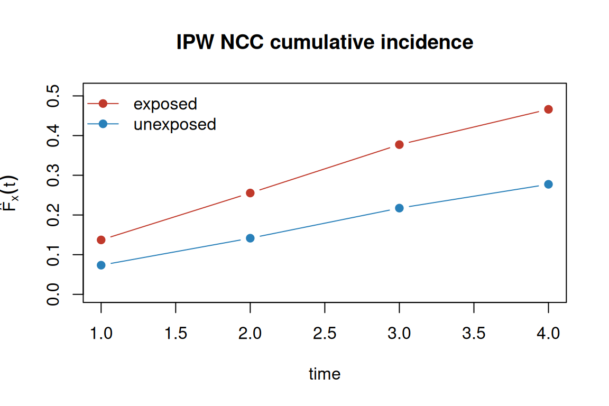

Code
library(matchatr)The classical nested case-control (NCC) analysis conditions on the sampled risk sets: each case and its matched controls form a stratum, and estimator = "clogit" uses the conditional partial likelihood (see vignette("nested-cc")). Controls appear only at their matched case’s failure time — a design feature that removes residual confounding by the matching variables but also discards information each control carries across the full follow-up.
The inverse probability weighting (IPW) approach breaks the matching. Each sampled control receives a weight equal to the inverse of its inclusion probability under the NCC sampling scheme, then a standard weighted Cox partial likelihood is fit over the unique subjects (cases + unique controls). Controls now contribute at every event time where they are still at risk — their exposure information is re-used across all failure times rather than only at their matched event. This gains efficiency, especially when many controls were matched to early cases and their follow-up extends across later events.
set.seed(77)
n <- 3000
beta_x <- log(2) # true Cox log hazard ratio
exposure <- rbinom(n, 1, 0.4)
confounder <- rnorm(n)
rate <- 0.08 * exp(beta_x * exposure + 0.4 * confounder)
tt <- rexp(n, rate) # single draw for consistent t and d
cohort <- data.frame(
id = seq_len(n),
t = pmin(tt, 5),
d = as.integer(tt <= 5),
exposure = exposure,
confounder = confounder
)sample_ncc() with incl_prob = TRUE draws the NCC sample and appends two columns needed for the IPW analysis:
ipw_weight — the Samuelsen (1997) inverse inclusion probability 1/π_j for each sampled control; cases get weight 1. The inclusion probability is the Kaplan-Meier-type formula π_j = 1 − prod of (1 − m_i / n_elig_i) over all event times where j was eligible, where m_i is the controls sampled and n_elig_i the eligible pool size..cohort_row — original cohort row index, used to deduplicate controls that were sampled into multiple risk sets before fitting the Cox model.set.seed(1)
ncc <- sample_ncc(cohort, time = "t", event = "d", m = 3, incl_prob = TRUE)
ncc[1:6, c("id", "t", "d", "exposure", "case", "set", "risk_time",
"ipw_weight", ".cohort_row")]
#> id t d exposure case set risk_time ipw_weight
#> <int> <num> <int> <int> <int> <int> <num> <num>
#> 1: 1449 0.001839354 1 0 1 1 0.001839354 1.000000
#> 2: 1017 5.000000000 0 0 0 1 0.001839354 1.243534
#> 3: 679 5.000000000 0 0 0 1 0.001839354 1.243534
#> 4: 2178 5.000000000 0 0 0 1 0.001839354 1.243534
#> 5: 1124 0.019657203 1 0 1 2 0.019657203 1.000000
#> 6: 930 5.000000000 0 1 0 2 0.019657203 1.243534
#> .cohort_row
#> <int>
#> 1: 1449
#> 2: 1017
#> 3: 679
#> 4: 2178
#> 5: 1124
#> 6: 930With estimator = "ipw_cox", matchatr:
.cohort_row (each cohort subject appears once in the analysis).coxph(Surv(t, d) ~ exposure + confounder, weights = ipw_weight, robust = TRUE).coxph(robust = TRUE).fit_ipw <- matcha(
ncc,
outcome = "d", # cohort event indicator, not the per-set "case"
exposure = "exposure",
design = nested_cc(strata = "set", time = "t"),
confounders = ~confounder,
estimator = "ipw_cox"
)
fit_ipw
#> <matchatr_fit>
#> Design: Nested case-control
#> Estimator: ipw_cox (engine: ipw_cox)
#> Outcome: d
#> Exposure: exposure
#> Confounders: ~confounder
#> N: 5028 (cases: 2164, controls: 2864)contrast(fit_ipw) # reports type = "hr" by default
#> <matchatr_result>
#> Estimator: ipw_cox (engine: ipw_cox)
#> Estimand: hazard ratio
#> Contrast: Hazard ratio
#> CI method: model
#> N: 2650
#>
#> Contrasts:
#> comparison estimate se ci_lower ci_upper
#> <char> <num> <num> <num> <num>
#> 1: exposure 1.933088 0.1157639 1.719004 2.173833The conditional partial likelihood (clogit) and the IPW weighted Cox target the same hazard ratio; the IPW estimator is at least as efficient because it reuses controls across failure times.
# Classical NCC (clogit, matched analysis) — same seed as the IPW sample above
set.seed(1)
ncc_classical <- sample_ncc(cohort, time = "t", event = "d", m = 3)
fit_clogit <- matcha(ncc_classical, "case", "exposure",
nested_cc(strata = "set", time = "t"),
confounders = ~confounder, estimator = "clogit")
# Full-cohort Cox (the gold standard)
fit_full <- survival::coxph(
survival::Surv(t, d) ~ exposure + confounder, data = cohort
)
cat("Full-cohort Cox HR: ", round(exp(coef(fit_full)["exposure"]), 3), "\n")
#> Full-cohort Cox HR: 1.922
cat("Classical NCC HR: ", round(contrast(fit_clogit)$contrasts$estimate, 3), "\n")
#> Classical NCC HR: 1.887
cat("IPW NCC HR: ", round(contrast(fit_ipw)$contrasts$estimate, 3), "\n")
#> IPW NCC HR: 1.933All three estimates target the same hazard ratio; the classical and IPW NCC estimates will differ by a small simulation noise term.
# Bootstrap is not available for the IPW Cox estimator.
contrast(fit_ipw, type = "hr", ci_method = "bootstrap")
#> Error in `contrast()`:
#> ! `ci_method = "bootstrap"` is not available for the IPW Cox estimator.
#> ℹ Use `ci_method = "model"` (the robust Lin-Wei interval from `coxph(robust = TRUE)`) or `ci_method = "sandwich"`.# The ipw_weight column is required; sample_ncc() without incl_prob = TRUE
# produces data that lacks it.
ncc_no_wts <- sample_ncc(cohort, "t", "d", m = 3)
matcha(ncc_no_wts, "case", "exposure",
nested_cc(strata = "set", time = "t"),
estimator = "ipw_cox")
#> Error in `require_ipw_ncc_columns()` at matchatr/R/weighted_cox.R:39:3:
#> ! The `ipw_cox` estimator requires an `ipw_weight` column in `data`.
#> ℹ Use `sample_ncc(..., incl_prob = TRUE)` to generate the Samuelsen KM inclusion weights before calling `matcha()`.Samuelsen KM weights are design-based: they depend only on the risk-set structure and are computed during sample_ncc(). An alternative is to fit a working model for the selection probability — a logistic regression (or GAM) of whether a subject was selected as a control, given its covariates and the event time. Working-model weights can be more efficient when the logistic model is close to the truth.
compute_ncc_weights() replaces the ipw_weight column with working-model estimates. It requires the full Phase-1 cohort to reconstruct who was eligible (but not selected) at each event time.
# Replace KM weights with GLM working-model weights
ncc_glm <- compute_ncc_weights(
ncc,
cohort = cohort,
method = "glm",
selection_formula = ~ risk_time, # default: time-only logistic model
time = "t"
)
ncc_glm[1:3, c("id", "case", "set", "ipw_weight")]
#> id case set ipw_weight
#> <int> <int> <int> <num>
#> 1: 1449 1 1 1.000000
#> 2: 1017 0 1 1.243532
#> 3: 679 0 1 1.243532Fit and compare:
fit_glm <- matcha(
ncc_glm,
outcome = "d",
exposure = "exposure",
design = nested_cc(strata = "set", time = "t"),
confounders = ~confounder,
estimator = "ipw_cox"
)
cat("KM weights HR: ", round(contrast(fit_ipw)$contrasts$estimate, 3), "\n")
#> KM weights HR: 1.933
cat("GLM weights HR:", round(contrast(fit_glm)$contrasts$estimate, 3), "\n")
#> GLM weights HR: 1.933Both KM and GLM weights target the same Cox hazard ratio; differences reflect the working-model vs design-based weight formulas.
A GAM can be used when the selection probability is non-linearly related to time:
ncc_gam <- compute_ncc_weights(
ncc,
cohort = cohort,
method = "gam",
selection_formula = ~ s(risk_time),
time = "t"
)
fit_gam <- matcha(
ncc_gam,
outcome = "d",
exposure = "exposure",
design = nested_cc(strata = "set", time = "t"),
confounders = ~confounder,
estimator = "ipw_cox"
)
cat("GAM weights HR:", round(contrast(fit_gam)$contrasts$estimate, 3), "\n")
#> GAM weights HR: 1.933The Phase-1 cohort is required: omitting it aborts with matchatr_missing_phase1.
compute_ncc_weights(ncc, cohort = NULL, method = "glm", time = "t")
#> Error in `compute_ncc_weights()`:
#> ! Working-model weight `method = "glm"` requires the full Phase-1 cohort data.
#> ℹ Supply the original cohort as `cohort`. It must contain the `time` column and any covariates in `selection_formula`.Because the IPW reformulation builds a weighted pseudo-cohort, it recovers the cumulative baseline hazard — which the classical conditional partial likelihood conditions away. absolute_risk() turns the fitted weighted Cox into a cumulative incidence
\[F_x(t) = 1 - \exp\!\big(-\exp(\hat\beta^{\top} x)\,\hat\Lambda_0(t)\big),\]
where \(\hat\Lambda_0(t)\) is an inverse-probability-weighted Breslow cumulative baseline hazard over the deduplicated analysis sample: at each event time the at-risk denominator \(\sum_j w_j \exp(\hat\beta^{\top} x_j)\) upweights each control by \(1/\pi_j\) so it stands in for the unsampled cohort. Confidence intervals use the delta method on the complementary log-log scale.
newdata <- data.frame(exposure = c(1, 0), confounder = c(0, 0))
ar <- absolute_risk(fit_ipw, newdata = newdata, times = c(1, 2, 3, 4))
ar
#> <matchatr_absolute_risk>
#> Engine: ipw_cox
#> Method: IPW
#> CI method: delta (log-log)
#> Times: 4 evaluation times (1, 2, 3, 4)
#> Patterns: 2 covariate patterns
#>
#> Absolute risk estimates:
#> row time estimate ci_lower ci_upper
#> <int> <num> <num> <num> <num>
#> 1: 1 1 0.1371473 0.11799719 0.15911488
#> 2: 1 2 0.2553437 0.22557048 0.28826433
#> 3: 1 3 0.3771901 0.33877772 0.41842855
#> 4: 1 4 0.4661829 0.42308660 0.51144304
#> 5: 2 1 0.0734698 0.06605153 0.08168416
#> 6: 2 2 0.1414573 0.13119292 0.15245217
#> 7: 2 3 0.2172580 0.20474294 0.23042173
#> 8: 2 4 0.2772665 0.26336477 0.29174737The hand-rolled weighted Breslow agrees with survival::survfit on the same weighted Cox model to machine precision, so the point estimate is exact; the interval is conservative (the within-sample Nelson-Aalen baseline variance).
est <- ar$estimates
exposed <- est[est$row == 1, ]
unexposed <- est[est$row == 2, ]
plot(exposed$time, exposed$estimate, type = "b", pch = 19, col = "#c0392b",
ylim = c(0, max(est$ci_upper)), xlab = "time", ylab = expression(hat(F)[x](t)),
main = "IPW NCC cumulative incidence")
lines(unexposed$time, unexposed$estimate, type = "b", pch = 19, col = "#2980b9")
legend("topleft", c("exposed", "unexposed"), col = c("#c0392b", "#2980b9"),
pch = 19, lty = 1, bty = "n")
The same verb serves the case-cohort cch engine (see vignette("case-cohort")); only the baseline-hazard weighting differs.
The real payoff of breaking the matching is control reuse across endpoints. The classical conditional analysis ties each control to its case’s failure time, so a control set sampled for one endpoint cannot serve another. Under IPW the sample is a weighted pseudo-cohort, so the same controls can fit a weighted Cox for any endpoint recorded in the cohort. matchatr supports two modes.
We build a cohort with two competing endpoints — a harmful exposure for endpoint 1, a protective one for endpoint 2:
set.seed(20)
n <- 4000
x <- rbinom(n, 1, 0.4)
z <- rnorm(n)
t1 <- rexp(n, 0.05 * exp(log(2.0) * x + 0.3 * z)) # endpoint 1: HR 2.0
t2 <- rexp(n, 0.05 * exp(log(0.5) * x + 0.2 * z)) # endpoint 2: HR 0.5
tau <- 6
tt <- pmin(t1, t2, tau)
cause <- ifelse(tt >= tau, 0L, ifelse(t1 < t2, 1L, 2L))
co <- data.frame(
id = seq_len(n), t = tt,
d_any = as.integer(cause != 0L), # any failure
d1 = as.integer(cause == 1L), # endpoint 1
d2 = as.integer(cause == 2L), # endpoint 2
x = x, z = z
)Sampling on the “any-failure” event ascertains every endpoint’s cases at once, so each cause-specific endpoint is analysed directly by passing it as outcome. The single sampled control set, with its shared inclusion weights, backs both fits:
set.seed(1)
ncc_multi <- sample_ncc(co, time = "t", event = "d_any", m = 3, incl_prob = TRUE)
fit_e1 <- matcha(ncc_multi, outcome = "d1", exposure = "x",
design = nested_cc(strata = "set", time = "t"),
confounders = ~ z, estimator = "ipw_cox")
fit_e2 <- matcha(ncc_multi, outcome = "d2", exposure = "x",
design = nested_cc(strata = "set", time = "t"),
confounders = ~ z, estimator = "ipw_cox")
rbind(cbind(endpoint = "d1", tidy(contrast(fit_e1))),
cbind(endpoint = "d2", tidy(contrast(fit_e2))))
#> endpoint term estimate std.error type conf.low conf.high
#> <char> <char> <num> <num> <char> <num> <num>
#> 1: d1 x 2.1554205 0.12710968 hr 1.9201487 2.4195196
#> 2: d2 x 0.4508881 0.04171509 hr 0.3761124 0.5405301Both hazard ratios sit near their cohort truths (2.0 and 0.5). A competing-endpoint case is ascertained by the sampling, so it keeps weight 1 (not the control weight 1/π_j) when a different endpoint is analysed — matchatr handles this when it builds the deduplicated analysis sample.
If the NCC was drawn for a single primary endpoint, its controls can still be reused for a secondary one. reuse_ncc_endpoint() keeps the controls’ primary inclusion weights 1/π_j (the inclusion probability is a property of the sampling, not the endpoint) and augments the secondary endpoint’s cases that were not sampled — pulled from the Phase-1 cohort with weight 1, since every case of an analysed endpoint is ascertained with probability 1:
set.seed(1)
ncc_primary <- sample_ncc(co, time = "t", event = "d1", m = 3, incl_prob = TRUE)
ncc_reuse <- reuse_ncc_endpoint(ncc_primary, cohort = co, time = "t", event = "d2")
fit_reuse <- matcha(ncc_reuse, outcome = "d2", exposure = "x",
design = nested_cc(strata = "set", time = "t"),
confounders = ~ z, estimator = "ipw_cox")
tidy(contrast(fit_reuse))
#> term estimate std.error type conf.low conf.high
#> <char> <num> <num> <char> <num> <num>
#> 1: x 0.458899 0.04307734 hr 0.3817806 0.551595Reusing the secondary endpoint needs the cohort to recover its unsampled cases; omitting it is rejected:
reuse_ncc_endpoint(ncc_primary, cohort = NULL, time = "t", event = "d2")
#> Error in `reuse_ncc_endpoint()`:
#> ! Reusing a control set for a second endpoint requires the full Phase-1 cohort.
#> ℹ Supply the original cohort as `cohort` so the secondary endpoint's cases that were not sampled can be ascertained.Breaking the matching also frees the analysis from the proportional-hazards scale. The same Samuelsen-weighted sample supports two non-Cox models, each reporting a different effect measure.
The accelerated failure time model (estimator = "ipw_aft") acts on the survival-time scale: contrast(type = "af") reports the time ratio exp(β) — the factor by which a unit of exposure multiplies the survival time (above one prolongs, below one shortens). It is a weighted Weibull survreg with a robust sandwich.
fit_aft <- matcha(ncc, outcome = "d", exposure = "exposure",
design = nested_cc(strata = "set", time = "t"),
confounders = ~ confounder, estimator = "ipw_aft")
contrast(fit_aft)
#> <matchatr_result>
#> Estimator: ipw_aft (engine: ipw_aft)
#> Estimand: time ratio
#> Contrast: af
#> CI method: model
#> N: 2650
#>
#> Contrasts:
#> comparison estimate se ci_lower ci_upper
#> <char> <num> <num> <num> <num>
#> 1: exposure 0.5335832 0.03098763 0.4761776 0.5979093The additive-hazards model (estimator = "ipw_aalen") acts on the rate scale: it writes the hazard as a sum, λ(t) = λ₀(t) + γ·exposure, so contrast(type = "excess") reports the excess hazard γ — an additive rate difference. Unlike a ratio it can be negative (a protective exposure lowers the rate), and its confidence interval is symmetric (it is not exponentiated).
fit_add <- matcha(ncc, outcome = "d", exposure = "exposure",
design = nested_cc(strata = "set", time = "t"),
confounders = ~ confounder, estimator = "ipw_aalen")
contrast(fit_add)
#> <matchatr_result>
#> Estimator: ipw_aalen (engine: ipw_aalen)
#> Estimand: excess hazard
#> Contrast: excess
#> CI method: model
#> N: 2650
#>
#> Contrasts:
#> comparison estimate se ci_lower ci_upper
#> <char> <num> <num> <num> <num>
#> 1: exposure 0.07596765 0.007473284 0.06132028 0.09061501Each estimator identifies exactly one scale, so asking for another is rejected:
Lin DY & Ying Z (1994). Semiparametric analysis of the additive risk model. Biometrika, 81(1), 61–71.
Borgan Ø & Langholz B (1997). Estimation of excess risk from case-control data using Aalen’s linear regression model. Biometrics, 53(2), 690–697.
Samuelsen SO (1997). A pseudolikelihood approach to analysis of nested case-control studies. Biometrika, 84(2), 379–394.
Saarela O, Kulathinal S, Arjas E & Läärä E (2008). Nested case–control data utilized for multiple outcomes: a likelihood approach and alternatives. Statistics in Medicine, 27(28), 5991–6008.
Støer NC & Samuelsen SO (2012). Comparison of estimators in nested case–control studies with multiple outcomes. Lifetime Data Analysis, 18(3), 261–283.
Støer NC & Samuelsen SO (2013). Inverse probability weighting in nested case-control studies with additional matching — a simulation study. Statistics in Medicine, 32(30), 5328–5339.
Kang S, Lu W & Liu M (2017). Efficient estimation for accelerated failure time model under case-cohort and nested case-control sampling. Biometrics, 73(1), 114–123.
---
title: "IPW analysis of nested case-control data"
code-fold: show
code-tools: true
vignette: >
%\VignetteIndexEntry{IPW analysis of nested case-control data}
%\VignetteEngine{quarto::html}
%\VignetteEncoding{UTF-8}
---
```{r}
#| include: false
knitr::opts_chunk$set(collapse = TRUE, comment = "#>")
```
The **classical** nested case-control (NCC) analysis conditions on the sampled
risk sets: each case and its matched controls form a stratum, and
`estimator = "clogit"` uses the conditional partial likelihood (see
`vignette("nested-cc")`). Controls appear only at their matched case's failure
time — a design feature that removes residual confounding by the matching
variables but also discards information each control carries across the full
follow-up.
The **inverse probability weighting (IPW)** approach *breaks the matching*. Each
sampled control receives a weight equal to the inverse of its inclusion
probability under the NCC sampling scheme, then a standard weighted Cox partial
likelihood is fit over the unique subjects (cases + unique controls). Controls
now contribute at every event time where they are still at risk — their exposure
information is re-used across all failure times rather than only at their matched
event. This gains efficiency, especially when many controls were matched to early
cases and their follow-up extends across later events.
```{r}
#| message: false
library(matchatr)
```
## Generating a cohort and an NCC sample
```{r}
set.seed(77)
n <- 3000
beta_x <- log(2) # true Cox log hazard ratio
exposure <- rbinom(n, 1, 0.4)
confounder <- rnorm(n)
rate <- 0.08 * exp(beta_x * exposure + 0.4 * confounder)
tt <- rexp(n, rate) # single draw for consistent t and d
cohort <- data.frame(
id = seq_len(n),
t = pmin(tt, 5),
d = as.integer(tt <= 5),
exposure = exposure,
confounder = confounder
)
```
`sample_ncc()` with `incl_prob = TRUE` draws the NCC sample and appends two
columns needed for the IPW analysis:
- **`ipw_weight`** — the Samuelsen (1997) inverse inclusion probability
1/π_j for each sampled control; cases get weight 1. The inclusion
probability is the Kaplan-Meier-type formula
π_j = 1 − prod of (1 − m_i / n_elig_i) over all event times where j
was eligible, where m_i is the controls sampled and n_elig_i the eligible
pool size.
- **`.cohort_row`** — original cohort row index, used to deduplicate controls
that were sampled into multiple risk sets before fitting the Cox model.
```{r}
set.seed(1)
ncc <- sample_ncc(cohort, time = "t", event = "d", m = 3, incl_prob = TRUE)
ncc[1:6, c("id", "t", "d", "exposure", "case", "set", "risk_time",
"ipw_weight", ".cohort_row")]
```
## Fitting the IPW weighted Cox model
With `estimator = "ipw_cox"`, matchatr:
1. Deduplicates the NCC data by `.cohort_row` (each cohort subject appears
once in the analysis).
2. Fits `coxph(Surv(t, d) ~ exposure + confounder, weights = ipw_weight,
robust = TRUE)`.
3. Returns the Lin-Wei robust sandwich variance via `coxph(robust = TRUE)`.
```{r}
fit_ipw <- matcha(
ncc,
outcome = "d", # cohort event indicator, not the per-set "case"
exposure = "exposure",
design = nested_cc(strata = "set", time = "t"),
confounders = ~confounder,
estimator = "ipw_cox"
)
fit_ipw
```
```{r}
contrast(fit_ipw) # reports type = "hr" by default
```
## Comparison: classical NCC vs IPW NCC vs full cohort
The conditional partial likelihood (`clogit`) and the IPW weighted Cox target
the same hazard ratio; the IPW estimator is at least as efficient because it
reuses controls across failure times.
```{r}
# Classical NCC (clogit, matched analysis) — same seed as the IPW sample above
set.seed(1)
ncc_classical <- sample_ncc(cohort, time = "t", event = "d", m = 3)
fit_clogit <- matcha(ncc_classical, "case", "exposure",
nested_cc(strata = "set", time = "t"),
confounders = ~confounder, estimator = "clogit")
# Full-cohort Cox (the gold standard)
fit_full <- survival::coxph(
survival::Surv(t, d) ~ exposure + confounder, data = cohort
)
cat("Full-cohort Cox HR: ", round(exp(coef(fit_full)["exposure"]), 3), "\n")
cat("Classical NCC HR: ", round(contrast(fit_clogit)$contrasts$estimate, 3), "\n")
cat("IPW NCC HR: ", round(contrast(fit_ipw)$contrasts$estimate, 3), "\n")
```
All three estimates target the same hazard ratio; the classical and IPW NCC
estimates will differ by a small simulation noise term.
## tidy() output
```{r}
tidy(contrast(fit_ipw))
```
## Rejection paths
```{r}
#| error: true
# Requesting an odds ratio from an IPW NCC fit is rejected (wrong scale).
contrast(fit_ipw, type = "or")
```
```{r}
#| error: true
# Bootstrap is not available for the IPW Cox estimator.
contrast(fit_ipw, type = "hr", ci_method = "bootstrap")
```
```{r}
#| error: true
# The ipw_weight column is required; sample_ncc() without incl_prob = TRUE
# produces data that lacks it.
ncc_no_wts <- sample_ncc(cohort, "t", "d", m = 3)
matcha(ncc_no_wts, "case", "exposure",
nested_cc(strata = "set", time = "t"),
estimator = "ipw_cox")
```
## Working-model weights
Samuelsen KM weights are **design-based**: they depend only on the risk-set
structure and are computed during `sample_ncc()`. An alternative is to fit a
**working model** for the selection probability — a logistic regression (or GAM)
of whether a subject was selected as a control, given its covariates and the
event time. Working-model weights can be more efficient when the logistic model
is close to the truth.
`compute_ncc_weights()` replaces the `ipw_weight` column with working-model
estimates. It requires the **full Phase-1 cohort** to reconstruct who was
eligible (but not selected) at each event time.
```{r}
# Replace KM weights with GLM working-model weights
ncc_glm <- compute_ncc_weights(
ncc,
cohort = cohort,
method = "glm",
selection_formula = ~ risk_time, # default: time-only logistic model
time = "t"
)
ncc_glm[1:3, c("id", "case", "set", "ipw_weight")]
```
Fit and compare:
```{r}
fit_glm <- matcha(
ncc_glm,
outcome = "d",
exposure = "exposure",
design = nested_cc(strata = "set", time = "t"),
confounders = ~confounder,
estimator = "ipw_cox"
)
cat("KM weights HR: ", round(contrast(fit_ipw)$contrasts$estimate, 3), "\n")
cat("GLM weights HR:", round(contrast(fit_glm)$contrasts$estimate, 3), "\n")
```
Both KM and GLM weights target the same Cox hazard ratio; differences reflect
the working-model vs design-based weight formulas.
A GAM can be used when the selection probability is non-linearly related to time:
```{r}
#| warning: false
ncc_gam <- compute_ncc_weights(
ncc,
cohort = cohort,
method = "gam",
selection_formula = ~ s(risk_time),
time = "t"
)
fit_gam <- matcha(
ncc_gam,
outcome = "d",
exposure = "exposure",
design = nested_cc(strata = "set", time = "t"),
confounders = ~confounder,
estimator = "ipw_cox"
)
cat("GAM weights HR:", round(contrast(fit_gam)$contrasts$estimate, 3), "\n")
```
The Phase-1 cohort is required: omitting it aborts with `matchatr_missing_phase1`.
```{r}
#| error: true
compute_ncc_weights(ncc, cohort = NULL, method = "glm", time = "t")
```
## Absolute risk
Because the IPW reformulation builds a *weighted pseudo-cohort*, it recovers the
cumulative baseline hazard — which the classical conditional partial likelihood
conditions away. `absolute_risk()` turns the fitted weighted Cox into a
cumulative incidence
$$F_x(t) = 1 - \exp\!\big(-\exp(\hat\beta^{\top} x)\,\hat\Lambda_0(t)\big),$$
where $\hat\Lambda_0(t)$ is an inverse-probability-weighted Breslow cumulative
baseline hazard over the deduplicated analysis sample: at each event time the
at-risk denominator $\sum_j w_j \exp(\hat\beta^{\top} x_j)$ upweights each control
by $1/\pi_j$ so it stands in for the unsampled cohort. Confidence intervals use
the delta method on the complementary log-log scale.
```{r}
newdata <- data.frame(exposure = c(1, 0), confounder = c(0, 0))
ar <- absolute_risk(fit_ipw, newdata = newdata, times = c(1, 2, 3, 4))
ar
```
The hand-rolled weighted Breslow agrees with `survival::survfit` on the same
weighted Cox model to machine precision, so the point estimate is exact; the
interval is conservative (the within-sample Nelson-Aalen baseline variance).
```{r}
#| fig-width: 6
#| fig-height: 4
#| fig-alt: >
#| Cumulative incidence over follow-up for an exposed versus an unexposed
#| subject estimated from the IPW nested case-control weighted Cox model. The
#| exposed curve rises faster, reflecting the hazard ratio above one.
est <- ar$estimates
exposed <- est[est$row == 1, ]
unexposed <- est[est$row == 2, ]
plot(exposed$time, exposed$estimate, type = "b", pch = 19, col = "#c0392b",
ylim = c(0, max(est$ci_upper)), xlab = "time", ylab = expression(hat(F)[x](t)),
main = "IPW NCC cumulative incidence")
lines(unexposed$time, unexposed$estimate, type = "b", pch = 19, col = "#2980b9")
legend("topleft", c("exposed", "unexposed"), col = c("#c0392b", "#2980b9"),
pch = 19, lty = 1, bty = "n")
```
The same verb serves the case-cohort `cch` engine (see `vignette("case-cohort")`);
only the baseline-hazard weighting differs.
## Multiple endpoints from one control set
The real payoff of breaking the matching is **control reuse across endpoints**.
The classical conditional analysis ties each control to its case's failure time,
so a control set sampled for one endpoint cannot serve another. Under IPW the
sample is a weighted pseudo-cohort, so the *same* controls can fit a weighted Cox
for any endpoint recorded in the cohort. matchatr supports two modes.
We build a cohort with two competing endpoints — a harmful exposure for endpoint
1, a protective one for endpoint 2:
```{r}
set.seed(20)
n <- 4000
x <- rbinom(n, 1, 0.4)
z <- rnorm(n)
t1 <- rexp(n, 0.05 * exp(log(2.0) * x + 0.3 * z)) # endpoint 1: HR 2.0
t2 <- rexp(n, 0.05 * exp(log(0.5) * x + 0.2 * z)) # endpoint 2: HR 0.5
tau <- 6
tt <- pmin(t1, t2, tau)
cause <- ifelse(tt >= tau, 0L, ifelse(t1 < t2, 1L, 2L))
co <- data.frame(
id = seq_len(n), t = tt,
d_any = as.integer(cause != 0L), # any failure
d1 = as.integer(cause == 1L), # endpoint 1
d2 = as.integer(cause == 2L), # endpoint 2
x = x, z = z
)
```
### Mode A — sample on the union event, analyse each endpoint
Sampling on the "any-failure" event ascertains *every* endpoint's cases at once,
so each cause-specific endpoint is analysed directly by passing it as `outcome`.
The single sampled control set, with its shared inclusion weights, backs both
fits:
```{r}
set.seed(1)
ncc_multi <- sample_ncc(co, time = "t", event = "d_any", m = 3, incl_prob = TRUE)
fit_e1 <- matcha(ncc_multi, outcome = "d1", exposure = "x",
design = nested_cc(strata = "set", time = "t"),
confounders = ~ z, estimator = "ipw_cox")
fit_e2 <- matcha(ncc_multi, outcome = "d2", exposure = "x",
design = nested_cc(strata = "set", time = "t"),
confounders = ~ z, estimator = "ipw_cox")
rbind(cbind(endpoint = "d1", tidy(contrast(fit_e1))),
cbind(endpoint = "d2", tidy(contrast(fit_e2))))
```
Both hazard ratios sit near their cohort truths (2.0 and 0.5). A competing-endpoint
case is *ascertained* by the sampling, so it keeps weight 1 (not the control
weight 1/π_j) when a different endpoint is analysed — matchatr handles this when
it builds the deduplicated analysis sample.
### Mode B — reuse a primary-endpoint control set for a secondary endpoint
If the NCC was drawn for a single *primary* endpoint, its controls can still be
reused for a *secondary* one. `reuse_ncc_endpoint()` keeps the controls' primary
inclusion weights 1/π_j (the inclusion probability is a property of the sampling,
not the endpoint) and augments the secondary endpoint's cases that were not
sampled — pulled from the Phase-1 cohort with weight 1, since every case of an
analysed endpoint is ascertained with probability 1:
```{r}
set.seed(1)
ncc_primary <- sample_ncc(co, time = "t", event = "d1", m = 3, incl_prob = TRUE)
ncc_reuse <- reuse_ncc_endpoint(ncc_primary, cohort = co, time = "t", event = "d2")
fit_reuse <- matcha(ncc_reuse, outcome = "d2", exposure = "x",
design = nested_cc(strata = "set", time = "t"),
confounders = ~ z, estimator = "ipw_cox")
tidy(contrast(fit_reuse))
```
Reusing the secondary endpoint needs the cohort to recover its unsampled cases;
omitting it is rejected:
```{r}
#| error: true
reuse_ncc_endpoint(ncc_primary, cohort = NULL, time = "t", event = "d2")
```
## Alternative models: time ratios and excess hazards
Breaking the matching also frees the analysis from the proportional-hazards
scale. The same Samuelsen-weighted sample supports two non-Cox models, each
reporting a different effect measure.
The **accelerated failure time** model (`estimator = "ipw_aft"`) acts on the
survival-*time* scale: `contrast(type = "af")` reports the **time ratio**
exp(β) — the factor by which a unit of exposure multiplies the survival time
(above one prolongs, below one shortens). It is a weighted Weibull `survreg`
with a robust sandwich.
```{r}
fit_aft <- matcha(ncc, outcome = "d", exposure = "exposure",
design = nested_cc(strata = "set", time = "t"),
confounders = ~ confounder, estimator = "ipw_aft")
contrast(fit_aft)
```
The **additive-hazards** model (`estimator = "ipw_aalen"`) acts on the *rate*
scale: it writes the hazard as a sum, λ(t) = λ₀(t) + γ·exposure, so
`contrast(type = "excess")` reports the **excess hazard** γ — an additive rate
difference. Unlike a ratio it can be negative (a protective exposure lowers the
rate), and its confidence interval is symmetric (it is not exponentiated).
```{r}
fit_add <- matcha(ncc, outcome = "d", exposure = "exposure",
design = nested_cc(strata = "set", time = "t"),
confounders = ~ confounder, estimator = "ipw_aalen")
contrast(fit_add)
```
Each estimator identifies exactly one scale, so asking for another is rejected:
```{r}
#| error: true
contrast(fit_aft, type = "hr")
```
## References
Lin DY & Ying Z (1994). Semiparametric analysis of the additive risk model.
*Biometrika*, 81(1), 61–71.
Borgan Ø & Langholz B (1997). Estimation of excess risk from case-control data
using Aalen's linear regression model. *Biometrics*, 53(2), 690–697.
Samuelsen SO (1997). A pseudolikelihood approach to analysis of nested
case-control studies. *Biometrika*, 84(2), 379–394.
Saarela O, Kulathinal S, Arjas E & Läärä E (2008). Nested case–control data
utilized for multiple outcomes: a likelihood approach and alternatives.
*Statistics in Medicine*, 27(28), 5991–6008.
Støer NC & Samuelsen SO (2012). Comparison of estimators in nested case–control
studies with multiple outcomes. *Lifetime Data Analysis*, 18(3), 261–283.
Støer NC & Samuelsen SO (2013). Inverse probability weighting in nested
case-control studies with additional matching — a simulation study.
*Statistics in Medicine*, 32(30), 5328–5339.
Kang S, Lu W & Liu M (2017). Efficient estimation for accelerated failure time
model under case-cohort and nested case-control sampling. *Biometrics*, 73(1),
114–123.